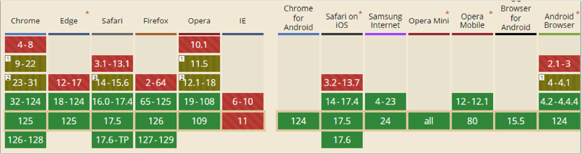

A otimização de front-end envolve um conjunto de práticas e técnicas destinadas a melhorar o desempenho de uma aplicação web do lado do cliente. Isso inclui minimizar o tempo de carregamento da página, melhorar a responsividade e garantir uma experiência de usuário mais suave e eficiente. Esse tipo de otimização é fundamental para o desenvolvimento de qualquer interface, principalmente quando se está pensando em dispositivos móveis, nos quais, muitas vezes, a conexão com a internet não é alta. Isso afeta diretamente a percepção do usuário sobre a velocidade e a qualidade de um site ou aplicativo.
A seguir, você aprenderá técnicas e ferramentas eficazes para otimizar a interface de seus sites ou sistemas web.
Quando você cria seus arquivos CSS (cascading style sheets ou folhas de estilo em cascata) e JavaScript ou até mesmo conteúdos HTML (hypertext markup language ou linguagem de marcação de hipertexto) de suas interfaces, é normal colocar comentários no código, espaços ou quebras de linhas, até mesmo para que seu código fique mais legível e organizado. Porém, cada espaço ou caractere a mais inserido em seus códigos contribui para o “peso” desses arquivos.
É evidente que um espaço em branco ou uma quebra de linha não influencia tanto no carregamento desses arquivos. Porém, ao somar todos os espaços, comentários e caracteres a mais, você perceberá que sim, isso acaba fazendo a diferença na hora de carregar sua interface inteira. Por exemplo, pense em qualquer arquivo de CSS, em que é comum adicionar uma quebra de linha a cada estilo inserido. Se você contar que cada quebra de linha é um caractere, no final do arquivo dará um número bem grande, e saiba que o último ponto e vírgula (;) de cada chamada CSS é desnecessário. Então, retirando tudo isso, seu arquivo CSS pode ter uma grande perda de peso.
Sendo assim, minimizar qualquer arquivo, basicamente, consiste em retirar tudo o que é desnecessário ao resultado final da sua interface. Isso inclui os comentários de código, que são informações para quem está programando, e não para o navegador ou usuário final.
Mas para fazer essa minificação existem ferramentas que agilizam muito o processo, como o HTML Minifer, que, como o próprio nome já diz, consiste em realizar essa otimização em arquivos de puro HTML.
Basicamente, você copia e cola todo o seu HTML dentro da ferramenta, clica em Minificar e ela cria uma cópia otimizada do seu arquivo.
Veja um exemplo de utilização do HTML Minifer:
Otimizando o carregamento do HTML
Fonte: Senac EAD (2024)
Mostra o site da ferramenta HTML Minifer, no qual, ao colar o código HTML, ela gera uma versão otimizada do seu conteúdo, sem espaços em branco, quebras de linha e comentários.
Observe, nessa figura, que o tamanho do arquivo foi reduzido em 24% – uma redução bem considerável. Agora basta copiar o código gerado e salvar em um novo arquivo HTML. Você deve ter percebido que o HTML Minifer, assim como outras ferramentas de otimização de carregamento de HTML, gera uma nova versão do seu conteúdo, sem espaços em branco, quebras de linha e comentários.
Isso torna “IMPOSSÍVEL” a manutenção do código, por isso é imprescindível sempre ter duas versões dos seus arquivos: uma é a versão original, na qual você pode realizar as atualizações e modificações, sempre que necessário, de forma fácil; a outra é a versão que será seu conteúdo minificado, e sempre que você atualizar seu conteúdo original, deve refazer o processo de minificação.
No entanto, essa minificação de HTML nem sempre é possível, principalmente quando seu HTML é gerado dinamicamente por meio de uma linguagem back-end, como o PHP (hypertext preprocessor ou pré-processador de hipertexto), ou por meio de algum framework, como Angular ou React.
Já para minimizar seus arquivos CSS e JavaScript, o processo também é simples. Se você realizar uma pesquisa, perceberá que existem diversas ferramentas com esse fim e que o passo a passo será praticamente igual ao de minificar o HTML.
Há outro processo, que deve ser utilizado em conjunto com os mostrados até o momento, que visa à otimização de seus arquivos, reduzindo ainda mais o tempo de carregamento do seu site ou sistema web. Ele se chama compactação de arquivos e ocorre ao lado do servidor. O tipo de compactação mais popular e já disponível na maioria das empresas de hospedagens web é a compactação GZIP.
A compactação de arquivos GZIP é uma técnica usada para reduzir o tamanho dos arquivos transferidos entre o servidor e o cliente (navegador) na web. Quando um arquivo é compactado usando GZIP, ele é codificado em um formato menor, o que reduz a quantidade de dados que precisa ser transmitida pela rede, resultando em tempos de carregamento mais rápidos e menor uso de largura de banda.
Para habilitar a compactação GZIP, você precisa configurar seu servidor web (como Apache, Nginx ou outros) para compactar os tipos de conteúdo adequados.
No Apache, você pode habilitar a compactação GZIP utilizando o módulo mod_deflate. Adicione a seguinte configuração ao arquivo .htaccess ou ao arquivo de configuração do servidor:
<IfModule mod_deflate.c>
# Ativar a compressão para HTML, CSS, JavaScript, Text, XML, e Fontes
AddOutputFilterByType DEFLATE text/html
AddOutputFilterByType DEFLATE text/css
AddOutputFilterByType DEFLATE application/javascript
AddOutputFilterByType DEFLATE application/xml
AddOutputFilterByType DEFLATE text/plain
AddOutputFilterByType DEFLATE application/font-woff2
AddOutputFilterByType DEFLATE application/font-woff
No entanto, a maioria das hospedagens já vem com um painel de usuário, e lá você pode ativar a compactação GZIP apenas clicando em um botão da interface da sua hospedagem. O ideal é você verificar se a empresa de hospedagem contratada já tem esse recurso e como você pode ativá-lo.
Assim como os recursos mostrados anteriormente, a compactação GZIP é uma técnica essencial para a otimização de desempenho web, ajudando a proporcionar uma experiência de usuário mais rápida e eficiente.
A compressão de imagens é o processo de reduzir o tamanho de um arquivo de imagem, preservando ao máximo a qualidade visual. Essa técnica é essencial para melhorar a eficiência do armazenamento e da transmissão de imagens na web e em outros sistemas.
A comprimir uma imagem, ela reduz o tamanho do arquivo descartando alguns dados da imagem original, o que resulta em uma perda de qualidade visual que, muitas vezes, é imperceptível ao olho humano. A vantagem é uma redução muito maior no tamanho do arquivo em comparação com a imagem original.
Geralmente, na web, são usados três tipos de arquivos de imagem. São eles:
Clique ou toque para visualizar o conteúdo.
O formato JPG ou JPEG é ideal para fotografias e imagens com muitas cores e detalhes. Contudo, vale ressaltar que esse formato não aceita transparência.
O formato PNG é melhor para gráficos com áreas de cor sólida e transparência. No entanto, em termos de web, é muito comum ver fotografias no formato PNG também.
O formato de imagem WebP é o mais recente. Ele oferece uma boa compressão e, assim como o PNG, suporta transparência, sendo adequado para muitos casos. No entanto, o formato WebP não é aceito em navegadores mais antigos como o Internet Explorer.
No site da Can I Use, é possível ver a situação atual da compatibilidade do formato de imagem WebP.

Compatibilidade WebP
Fonte: Senac EAD (2024)
Mostra o site da Can I Use, com o gráfico de compatibilidade dos principais navegadores com o formato de imagem WebP. O gráfico mostra que versões antigas do Chrome, Edge, Safari, Firefox e Opera não aceitam esse tipo de imagem.
Existem muitas ferramentas e métodos para comprimir uma imagem. Como exemplo, será utilizada a ferramenta TinyPng, que, apesar do nome, compacta imagens nos três formatos – PNG, JPG e WebP.
O TinyPng é uma ferramenta on-line que utiliza técnicas avançadas de compressão para reduzir o tamanho dos arquivos de imagem sem perder qualidade visual perceptível. Isso quer dizer que o “peso” das imagens é reduzido e não se nota nenhuma significativa perda de qualidade das imagens.
O processo para utilizar o TinyPng é bem simples: você entra no site dele e faz upload das suas imagens. Ele vai compactá-las e disponibilizá-las para download. Veja um exemplo:
TinyPng
Fonte: Senac EAD (2024)
Mostra uma compactação da foto de um hambúrguer no site TinyPng.
No exemplo dessa figura, é possível ver que a imagem foi reduzida em 26% do seu tamanho original.
Agora, veja a comparação da foto original com a foto compactada pelo TinyPng:
Comparação de imagens
Fonte: Adaptado de Pexels (c2024)
Duas imagens de um hambúrguer, comparando a original com a compactada. A diferença entre as duas é imperceptível.
Compare bem as duas imagens da figura e perceba que praticamente não há diferença entre elas, porém a compactada representa um tamanho 26% menor que a original. Em alguns casos, o TinyPng consegue reduzir até 70% do peso original da imagem.
Assim como as demais técnicas de otimização demonstradas, a compressão de imagens é uma técnica essencial para a otimização de performance na web e para garantir uma experiência de usuário eficiente e agradável.
Existem algumas ferramentas que auxiliam o processo de entender os pontos em que seu site pode melhorar. Uma das mais populares se chama PageSpeed Insights, uma ferramenta do Google que relata a experiência do usuário de uma página em dispositivos móveis e desktop e fornece sugestões sobre como essa página pode ser melhorada.
Dentro dessas sugestões, estão pontos que podem ser melhorados em termos de carregamento do site.
Utilizar o PageSpeed Insights é bem simples: basta acessar o site da ferramenta e inserir a URL (uniform resource locator ou localizador uniforme de recursos) do site a ser analisado. Assim, dentro de alguns segundos será mostrada uma lista de pontos que podem ser melhorados.
A análise realizada mostra os dados separados entre acessos em dispositivos móveis e computadores.
PageSpeed
Fonte: Senac EAD (2024)
A figura mostra um exemplo de análise da ferramenta PageSpeed.
A figura mostra que o site de exemplo utilizado teve uma pontuação 43 de 100 em termos de performance. Logo abaixo, a própria ferramenta mostra todos os pontos em que o site pode melhorar. Perceba, também, que o PageSpeed não analisa só a performance do site; ele analisa fatores como acessibilidade, práticas recomendadas e SEO (search engine optimization ou otimização para motores de busca).
Isso faz com que essa ferramenta ajude não só a encontrar pontos a melhorar no carregamento do seu site, mas também a seguir boas práticas de codificação e SEO.
A otimização de front-end é um aspecto vital no desenvolvimento web moderno, impactando diretamente a performance, a experiência do usuário e a eficiência operacional de uma aplicação.